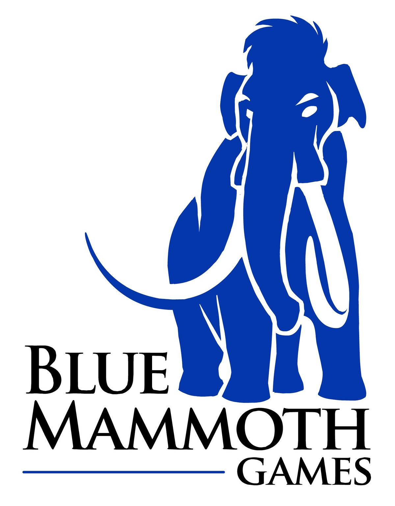

Cliquez sur le continent qui vous intéresse.
Ubisoft Paris
Fondé en 1992, le studio pionnier d'Ubisoft fait partie intégrante de l'histoire de l'entreprise
et a accompagné son développement au cours des trois dernières décennies. Avec plus de 700 talents
créatifs et techniques travaillant à Paris, il est à l’origine de plusieurs marques iconiques d’Ubisoft
comme le phénomène mondial de divertissement Just Dance®. Le portfolio du studio couvre plusieurs générations
de consoles et inclut certaines des marques les plus fortes d’Ubisoft comme la série Tom
Clancy’s Ghost Recon®, Lapins Crétins® ou Watch Dogs®.
Aujourd’hui, le studio travaille sur plusieurs projets ambitieux.
Ubisoft Annecy
Ubisoft Annecy a été créé en 1996. Le studio a
développé son expertise multijoueur sur différents jeux, notamment grâce à son travail
sur la franchise Tom Clancy’s Splinter Cell® ou la marque Assassin’s Creed®, avec Assassin’s
Creed® IV Black Flag®. Plus récemment, l’équipe a collaboré avec Massive Entertainment sur la franchise
Tom Clancy’s The Division®. Ubisoft Annecy a réalisé sa première création originale avec Steep®.
En 2020, Ubisoft Annecy a poursuivi sa collaboration avec Massive Entertainment pour accompagner la sortie
de Tom Clancy’s The Division® 2. 2020 a été une grande année pour le studio avec l’annonce de sa deuxième création
originale Riders Republic®.

Ubisoft Barcelone
Créé en 1998, Ubisoft Barcelone a travaillé sur un large éventail de
jeux, allant du jeu de course au jeu de plateformes. Depuis 2017, Ubisoft Barcelone n’a cessé de
développer son vivier de talents, passant de 40 à plus de 180 d’ici à 2022.
Ubisoft Barcelone développe activement du contenu additionnel
pour Tom Clancy’s Rainbow Six® Siege et travaille également sur le
développement de Beyond Good and EvilTM 2 et d’un autre titre AAA non
annoncé. Récemment, Ubisoft Barcelone s’est distingué par son travail de
développement sur Assassin’s Creed® Valhalla et une version remasterisée
d’Assassin’s Creed® 3. Le studio a également travaillé sur Hyper ScapeTM et
Tom Clancy’s The Division® 2
Ubisoft Nadeo
Fondé en 2000 et acquis par Ubisoft en 2009, Ubisoft Nadeo est le créateur de TrackMania®,
le célèbre jeu de course en multijoueur, et Shootmania®, le FPS intuitif. Le studio s’est
construit une excellente réputation autour de la qualité de sa technologie innovante qui
offre une expérience de jeu en ligne palpitante, basée sur la compétition et la créativité
des joueurs, sur PC, consoles et en réalité virtuelle. Les jeux d’Ubisoft Nadeo rassemblent
plus de 39 millions de joueurs.
Green Panda Games
Fondé en 2013 et basé à Paris, Green Panda Games développe et publie des jeux de type
« idle ». Fort d’une équipe de 120 talents, la société a lancé, depuis sa création,
plus de 55 jeux qui ont été téléchargés par près de 243 millions de joueurs dans le monde.
Un grand nombre de ces jeux a rencontré un succès immédiat, tels que Bee Factory, Sushi Bar,
Terrarium, ou plus récemment Mining Inc. La société possède une vision éditoriale aiguisée, des
processus créatifs itératifs basés sur la data et un savoir-faire incontestable en matière d’acquisition
de nouveaux utilisateurs et de monétisation publicitaire.
Blue Mammoth Games
Fondé en 2009 et acquis par Ubisoft en 2018, Blue Mammoth Games est un
studio de développement basé à Atlanta, en Géorgie (États-Unis). L’équipe
chevronnée s’est spécialisée dans les jeux multijoueur en ligne à grandes
communautés. Blue Mammoth développe Brawlhalla®, un jeu de combat Free-To-
Play également disponible en cross-play sur mobile et toutes les autres
plateformes. Brawlhalla a plus de 65 millions de joueurs, et est actuellement
le jeu de combat le plus joué sur Steam. Plus d’un million de dollars ont été
attribués dans le cadre du championnat officiel de Brawlhalla.

Ubisoft Halifax
L’aventure du studio a débuté en 2015 et a fait son chemin jusqu’à atteindre plus de 70 collaborateurs.
Il s’agit du premier studio canadien d’Ubisoft à s’être spécialisé dans les jeux mobiles en free-to-play.
Ubisoft Halifax est également un studio de co-développement solide au sein de l’écosystème d’Ubisoft,
contribuant à de nombreux et passionants projets mobiles à venir et travaillant sur ses propres projets non annoncés.
Le studio prend également part à de nombreuses initiatives locales visant à développer la communauté de développeurs
de jeux dans le Canada atlantique et à rendre l’industrie plus inclusive et plus diversifiée.
Ubisoft San Francisco
Siège d’Ubisoft en Amérique du Nord depuis 1996, Ubisoft San Francisco a ouvert
son studio de développement en 2009 et a depuis développé Rocksmith® et Rocksmith® 2014.
En 2017, le studio a lancé South Park™ : L’Annale du Destin™ en collaboration avec Trey
Parker, Matt Stone et South Park Digital Studios. Le studio travaille actuellement sur
le développement de Rocksmith®+, un nouveau service d’abonnement d’apprentissage musical.
En plus de Rocksmith®+, le studio travaille sur un autre projet non annoncé.
Ubisoft Abu Dhabi
Ouvert en 2011, Ubisoft Abou Dabi est l’un des premiers grands studios
de développement de jeux vidéo basé dans la capitale des Émirats
Arabes Unis. Le studio héberge une équipe de 60 talents dont des
programmeurs, des concepteurs de jeux et des artistes,. Depuis 2014, Ubisoft Abu
Dabi a développé des titres à succès, dont CSI: Hidden CrimesTM. Avec l’acquisition par
Ubisoft en février 2017 du jeu social Free-To-Play multijoueur Growtopia®, le studio supervise
les opérations live du titre et gère sa communauté. Ubisoft Abu Dabi
travaille actuellement sur la création de nouveaux contenus pour ses jeux live.

Ubisoft Mumbai
Le studio de Mumbai a été créé en octobre 2018. Situé au sein d’une ville dynamique
qui dispose d’un vivier de talents créatifs, le studio est en parfait accord avec
l’ADN d’Ubisoft. Le studio s’est rapidement développé et travaille sur le développement
de nombreux projets passionnants. Le studio de Mumbai dispose d’une équipe de production
AAA à part entière, qui se concentre sur le développement de titres AAA en collaboration avec
d’autres studios Ubisoft. Ubisoft Mumbai se donne pour objectif de développer un véritable écosystème
du jeu vidéo en Inde, en s’associant avec les meilleures écoles et en créant un solide réseau de talents
créatifs dans le pays.
Ubisoft Da Nang
Basé à Da Nang au Vietnam et situé à un carrefour régional de l’innovation
et de différentes cultures, Ubisoft Da Nang a ouvert ses portes en 2020 et
continue de grandir, à l’image de la métropole. Le studio se consacre au développement
de « jeux instantanés » alimentés par la technologie H5 et a déjà créé 6 titres,
disponibles sur la plateforme dédiée d’Ubisoft, Ubisoft Nano.
Ubisoft Da Nang continue d’élargir son équipe multiculturelle, qui produit du contenu additionnel
pour ses jeux tout en travaillant sur des projets non annoncés.
Ubisoft Philippines
En 2016, Ubisoft Philippines a ouvert le premier, et unique, studio de développement de jeux
AAA dans le pays. Depuis lors, le studio s’est développé et compte aujourd’hui 150 professionnels,
qui co-développent les franchises phares d’Ubisoft telles que Far Cry 6®, Assassin’s Creed® Valhalla,
Assassin’s Creed® Odyssey, Assassin’s Creed® Origins, Assassin’s Creed® III Remaster, Assassin’s Creed®
Liberation sur Nintendo Switch ; Skull & BonesTM, For Honor®, et The Crew® 2. Grâce à des partenariats
avec des institutions académiques et à une implication active dans des événements communautaires, Ubisoft
Philippines continue à développer l’industrie du jeu vidéo en Asie du Sud-Est.